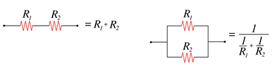
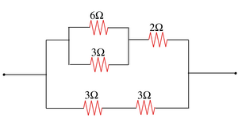
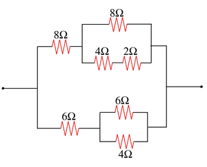
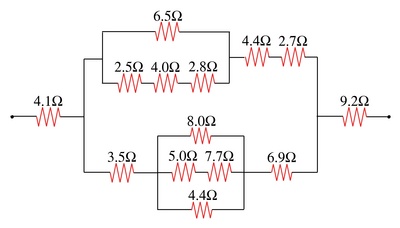
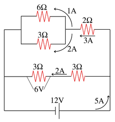

物体的电阻 (resistance) 用来衡量当电流通过物体时会收到"阻碍". 电阻越大, 电流同过该物体时受到的阻碍就越大. 欧姆定律刻画了电阻, 电流和电压之间的关系. \[\begin{eqnarray*} I = \frac{V}{R} \end{eqnarray*}\] 其中, V 表示物体两端的电压(电势差), R 为该物体的电阻, I 为通过物体的电流.电阻可以通过串联和并联的方式组合成为复杂的电阻网络:

例如, 以下网络由两个串联电阻与第三个电阻并联形成. 它的等效电阻为\(\frac{1}{\frac{1}{R_1} + \frac{1}{R_2 + R_3}}\)
一个通过串联和并联搭建的电阻网络可以表示成为字符串. 定义
电阻网络可以按照以下规则表示
其中"|"表示或者. 规则1 表示一个电路网络要么由两个网络串联而成, 要么由两个网络并联而成, 要么是单个电阻器. 规则2 表示一个电阻器的电阻取值是多少.
下面是几个例子:


这样的表示方式称为 上下文无关文法 (Context Free Gramma), 它是在程序语言设计, 人工智能等方向有广泛应用.




public abstract class Circuit {
public abstract double resistance();
}resistance() 返回该网络的等效电阻值. 给定网络的字符串表示, 构造相应的 Circuit 对象, 并输出它们的等效电阻值.
